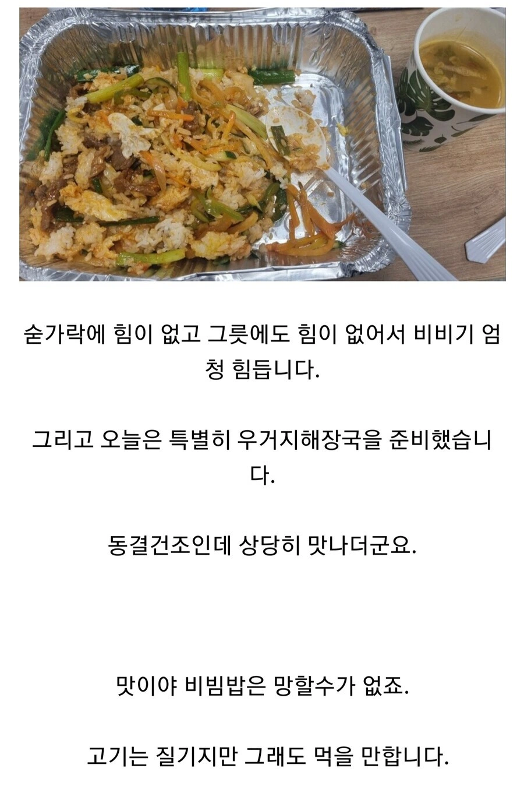
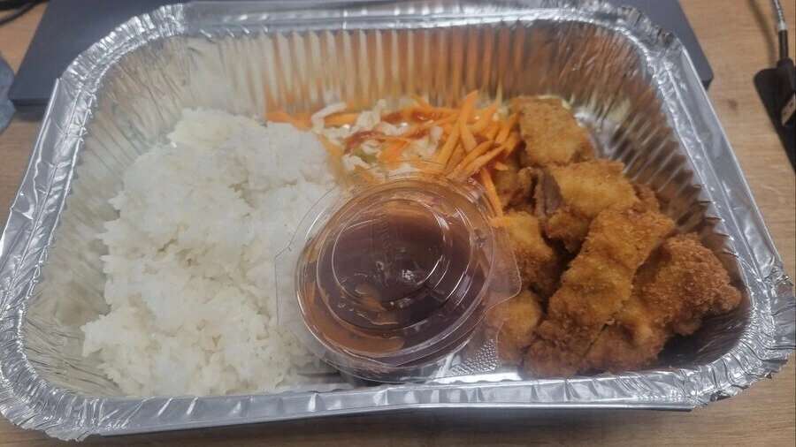
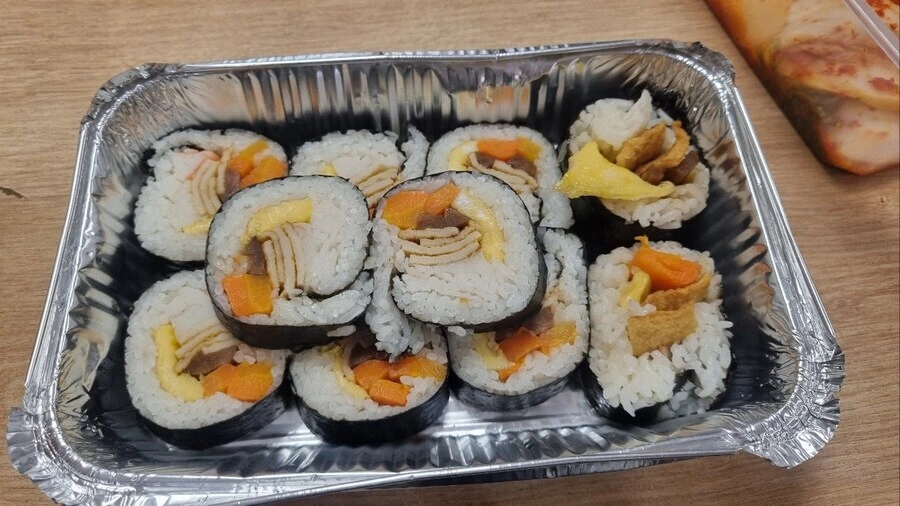
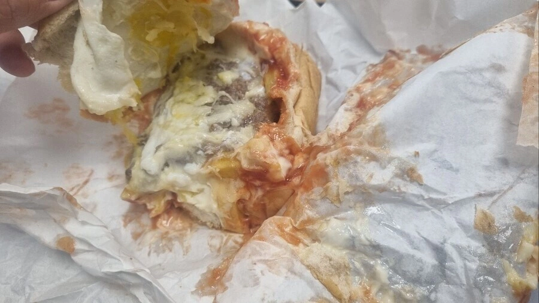

존나 비싸네 씨발거
근데 난 아무것도 모르는데도 아프리카에서 저 음식이라니깐 존나 비쌀것같긴 해 ㅋㅋㅋㅋ
스위스 단어 하나로 어느정도인지 감이 온다
유튜브 보다보면 아프리카 아니여도 길거리 음식 제외하면 다들 외식 물가가 현지인들이 쉽게 사먹을 가격이 아니더라
아프리카는 물자 부족도 있지만 유통망이 좆망이라더라
팔아주셔서 감사합니다!! 하고 그랜절 박아야할듯ㅋ
알기전 : 어떻게 이걸 이 가격에?
알고난뒤 : 어떻게 이걸 이 가격에?
차은우 봤을때: 와 사람이 어떻게 저렇게 생김?
개붕이 봤을때: 와 사람이 어떻게 저렇게 생김?
아프리카에서 저돈에 한식해주면 절하고 먹어야지 ㅋㅋ
절하기 싫어
싫어도 하게 될거야
발기하고 먹음
그럼 교회해
김밥봐라 얼마나 개 헤쳐먹은건지 감도안온다
-> 머나먼 타지에서 고생하는 한국인들을 위해 진짜 온갖 똥꼬쇼는 다 펼쳐주셨구나 8ㅅ8
김밥에 어묵을 존나 넣지말란 법이 있을까?
단무지를 뺀건 인권유린이다
예전 냉면 비싼 집이라 해놓고 좌표 아프리카 찍었던 글 기억나네
https://bbs.ruliweb.com/hobby/board/300117/read/30681654
이거네 ㅋㅋㅋ'[한식] 16,100원짜리 냉면 포장 '
아프리카에서 16000원 냉면? 혜자 아니냐?
아프리카도 나름 쌀이 주식인데가 꽤 있다고 하는데 품종은 다르겠지만 통일벼가 거기선 인기 많다던데
오지에서 한식 비싸게 파는 곳들 많은데
아프리카에서 저 가격이면 리즈너블하다..
의외로 아프리카 물자 부족으로
물가 존나 비쌈
아프리카 보다 물가 비싼곳은
스위스 노르웨이 그리고 남극이 있음